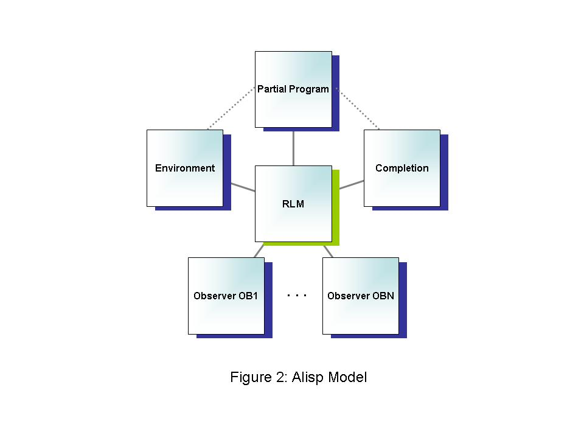

Partial programs must be either functions with no arguments, or subclasses of <alisp-program>, which implement a method for start.
We use an example partial program for the taxi domain adapted from (Andre+Russell:2002) as a running example:
(setf p #'td-taxi-prog:td-taxi-prog)
A partial program should reflect what we want to do in the enviroment. Recall that for the taxi environment, we're rewarded for dropping passengers off at their destination locations. So, our general task can be described as first getting a passenger from a source location, and then going to the destination location and dropping him off. Now, in this particular example, the choice of whether to do a pickup or dropoff is trivial. In general, however, the choice of top level action may not be obvious (for example, if there was an action for refuelling). For explanatory purposes, we therefore create a choice at the top-level:
(loop
(choose task-choice
(call (get-pass))
(call (put-pass))))choose sets a choice (called top) for the partial program between get-pass and
put-pass. The program does not specify which of these
choices to - that information is learnt in the form of a
completion, which we will describe later. Note that the choice can, in general, depend on
the environment state and possibly the state of the program
(e.g. values of variables).
What should get-pass do? Well, we want to get a passenger, which in the taxi environment requires navigating to
his location first and then executing a pick-up action. So, our code looks like this:
(defun get-pass ()
(call nav-src (nav (passenger-src)))
(action pickup 'P))
nav gets us to the passenger's
location, we always want to pick up the passenger. Note that the function call (passenger-src) is assumed to extract the source of the passenger in the current environment state. See the full source file here for details.
Likewise, put-pass should navigate to the passenger's destination
location and then execute a drop action in the environment:
(defun put-pass ()
(call nav-dest (nav (passenger-dest)))
(action dropoff 'D))
(defun nav (loc)
(until (equal (pos) loc)
(with-choice nav-choice (dir '(N E S W))
(action nav-move dir))))
To see how this partial program 'works', we can use alisp-user:io-interface, which is similar to the rl:io-interface
function shown earlier. The only difference is that now, information
about events in the partial program as well as events in the
environment is printed, and instead of entering what actions to do in
the environment, the user must enter what choice to make at each choice
state. Here is an example interaction.
Note the various stack calls as the partial program runs through the choice points. As you can see, choices may be nested in a partial program. During execution, there is a 'choice stack', analogous to a standard call stack. A choice is added to this stack when its body is entered, and removed when its body is exited.
Exercise : write a partial program for some environment you've created, and verify that it works as expected.
A partial program by itself does not uniquely say how to act in the
environment due to the choice statements. To execute a partial program,
we therefore need a completion, which says how the choices
are made. The completion is allowed to look at the current joint
state, which includes the state of the environment as well as the
machine state, which in turn consists of the runtime stack
and global memory (the number of joint states could, of course, be
large in practical examples, and we will shortly discuss how to use
function approximation methods to simplify the learning problem).
Completions of a partial program are represented as objects of type <policy> that take a joint state and return a choice.
The model for our alisp implementation can be summarized in the following
diagram (note the similarities and differences with respect to the reinforcement
learning model):

The main difference from the architecture in the flat case is that, rather than having a policy that directly specifies actions to take in the environment, there is a completion that decides choices to make in the partial program. The partial program in turn specifies actions to do in the environment. For a precise description of what happens during the main loop, see here. The dotted line between the environment and partial program is because the partial program must do actions that are legal in the environment, and the dotted line between the completion and partial program is because the completion must return choices that are legal at the current state of the partial program. If either of these does not happen, an error will be signalled.
As an example, the following creates an instance of the SMDP Q-learning algorithm (with a tabular Q-function), and does learning.
(progn (setf smdpq-learner (alisp-smdpq:make-smdpq-alg))
(alisp-user:learn p e 'random smdpq-learner 10000 :hist-length 100))
We can generate learning curves as before :
CL-USER(134): (progn (setf policy-hist (alisp-user:get-policy-hist smdpq-learner))
(pprint (alisp-user:evaluate p e policy-hist :num-steps 25 :num-trials 5)))
Evaluating policies....................................................................................................
#(-7.62 -9.5 -9.6 -7.3 -2.9 -7.5 -7.4 -6.06 -11.9 -4.8 -6.36 -4.9 -2.5
-1.88 -7.3 -0.64 -4.38 -2.5 -4.9 -2.5 -1.88 -6.88 -4.38 -2.5 -5.0
-5.0 -2.5 -2.5 -2.5 -2.5 -5.0 -2.5 -2.5 -5.0 -2.5 -1.88 -2.5 -2.5
-1.88 -2.5 -2.5 -2.5 -1.88 -2.5 -2.5 -2.5 -2.5 -1.88 -2.5 -2.5 -2.5
-2.5 -2.5 -2.5 -2.5 -2.5 -2.5 -2.5 -2.5 -2.5 -2.5 -2.5 -2.5 -2.5 -2.5
-2.5 -2.5 -2.5 -2.5 -2.5 -2.5 -2.5 -2.5 -2.5 -2.5 -2.5 -2.5 -2.5 -2.5
-2.5 -2.5 -2.5 -2.5 -2.5 -2.5 -2.5 -2.5 -2.5 -2.5 -2.5 -1.88 -1.88
-1.88 -1.88 -2.5 -1.88 -2.5 -1.88 -1.26 -1.26)
Finally, we can examine the learnt Q-functions using, for example :
(progn (setf q-hist (alisp-user:get-q-hist smdpq-learner))
(alisp-user:io-interface p e (list (aref q-hist 5) (aref q-hist 95))))
One of the attractions of ALisp and related formalisms like MAXQ is that the task decomposition induced by an ALisp program leads to a decomposition of the Q-function, in which each component is amenable to state abstraction. Recall that the Q-function given some omega and u is the expected total future rewards if we choose u in omega and choose optimally thereafter. Let the parent choice be the choice which was on the top of the stack when u was chosen. Q can then be decomposed as a sum of 3 components :
Hierarchically optimal recursively decomposed Q-learning (HORDQ) is an algorithm that learns the three components separately. We can repeat the earlier learning experiment using HORDQ :
(progn (setf hordq-learner (make-instance 'ahq:<hordq>))
(alisp-user:learn p e 'random hordq-learner 10000 :hist-length 100))
Try examining the learnt Q-functions - each of the components will be shown separately.
The main use of the 3-part decomposition is that each component will depend on a small number of state variables. For example, in the taxi domain, Qr of a navigation choice does not depend on the source location of the passenger. Currently, the programmer must specify the state abstractions. This is done by a specifying a feature function, as before, when we were doing function approximation in the flat case.
Here is an example feature
function for the taxi domain. The feature function uses several
utility functions to access the joint state. More details can be
found by typing (help alisp-features). We can use this
feature function together with HORDQ learning:
(progn (setf state-abstracted-hordq (make-instance 'ahq:<hordq>))
(alisp-user:learn p e 'random state-abstracted-hordq 10000 :hist-length 100))
In the taxi example, state abstraction gives a definite improvement.
Exercise : Figure out what state abstractions apply for the components of the Q-function for the partial program you created in the previous exercise. Write a corresponding feature function and try out HORDQ learning. How much does state abstraction help?
Exercise : Try using function approximation together with SMDPQ and HORDQ.
Exercise : Come up with a new learning algorithm for ALisp programs (SARSA, policy search, model-based learning, others...). Implement and compare with Q-learning.